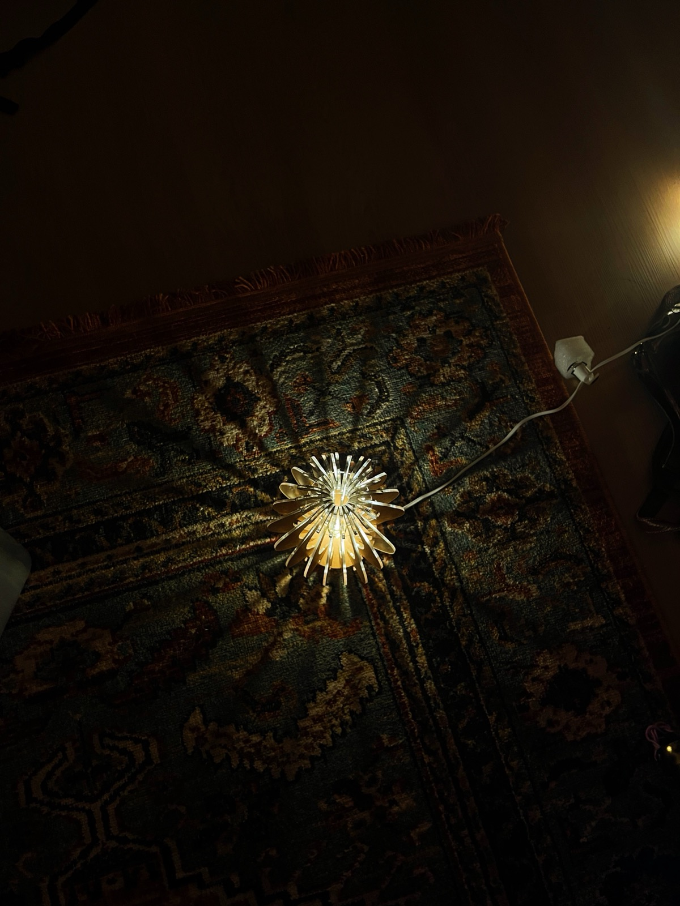

A lamp built from one repeated acrylic part
I designed and built this lamp alone, from CAD model to assembly. Twenty identical laser-cut legs slot into two fit pieces, diffusing the light and giving the lamp its shape.
- Station
- BKN Solo build
- When
- Summer 2025
- Size
- 12″ tall × 8″ wide
- Parts
- 22: 2 fit pieces, 20 legs
- Tool
- AutoCAD, laser cutter
- Material
- Acrylic

Overview
The structure uses two fit pieces and twenty repeated legs that slot into them, all laser-cut from acrylic. I wanted to see how a single repeated part, cut precisely, could make something both structural and organic.
Design and fabrication
I started in AutoCAD, modeling the two fit pieces that anchor the structure and one leg shape repeated twenty times around them. Once the model was final, I laser-cut all twenty-two pieces.
Getting the legs right
On the first pass, the fit pieces fit exactly as designed, but the 1/8″ acrylic legs were too flimsy. Some broke while I was fitting all twenty into place. I recut them in 1/4″ acrylic, which survived assembly and still fit exactly.


A repeated part is only as strong as its thinnest dimension. A small change in material thickness turned a fragile prototype into a lamp that holds together.